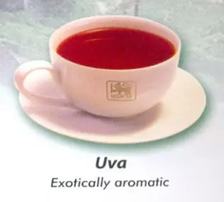

From the seven tea regions of Sri Lanka, come the seven flavours of Ceylon Tea. Each blessed with its distinctive appeal to seduce and pamper palates that demand an array of choice. Lightest to strongest, full-bodied to mild mannered, a cup of Ceylon Tea is nothing but the finest.
From the mist wrapped mountains of Nuwara Eliya that rise from the centre of the island to soar over 6000 feet above sea level, where the morning air is cool and bracing and the nights cold and touched with frost, come the lightest and the most refined tea to fill the connoisseurs’ cup. Nuwara Eliya is the champagne province of the country’s tea lands with flowery pekoes that are best imbibed light.
Heritance Tea Factory :
This region is twice blessed. It’s blessed during the months of June and September when the southwest monsoon arrives; a cold and dry spell to spur the tea bush to sprout the leaves that will produce a medium-bodied rosy tea graced with subtle character. Then it’s blessed again between November and January when the northeast monsoon’s yearly visitation brings rain in its wake and makes the tea darker in colour and stronger in flavour, adding more tang.
Luckyland Estate :
It’s the climate that makes Uva tea highly prized. The mountainous terrain is exposed to both monsoon seasons; the annual northeast and the southwest monsoons. But when the winds reach these climes and howl around its high towers, they blow bereft of moisture – a spent force which had discharged its water content in the hills below. The dryness gives Uva tea a special concentrated aroma and a distinct exotic flavour.
Uva Halpewatte Tea Factory :
This mid country tea grown at 2,000 to 4,000 feet above sea level produces robust, full-bodied teas. Ideal for those who love their tea strong, bursting with flavour: the perfect wake-up tea for winter mornings, or when the heart needs a perky sprint.
Geragama Tea Factory :
| Tea Image | Tea Taste | Tea Description |
|---|---|---|
| Delicately Fragrant | Nuwara Eliya, the best-known of Sri Lanka’s tea-growing districts, is the most mountainous, and has the highest average elevation. Combined with low temperature, this produces teas of exquisite bouquet. | |
| Exquisitely Tangy | The Uda Pussellawa district is situated close to Nuwara Eliya, so its tea is often compared to that of its neighbour. But it is darker in the cup, with a pinkish hue, of greater strength, and exquisitely tangy. | |
|  | Exotically Aromatic | The remote Uva district is exposed to the winds of both northeast and southwest monsoons, believed to endow the tea produced here with a special, unmistakable character and exotically aromatic flavour. |
| Intensely Full-Bodied | In the Kandy district, where the industry began in 1867, the teas produced are described as “mid-grown”as cultivation does not exceed 1,300m(4000 Feet). They range in flavour depending on the altitude and whether the plantation is sheltered from monsoon winds. | |
| Each Tea from different areas has a uniquely different taste | ||